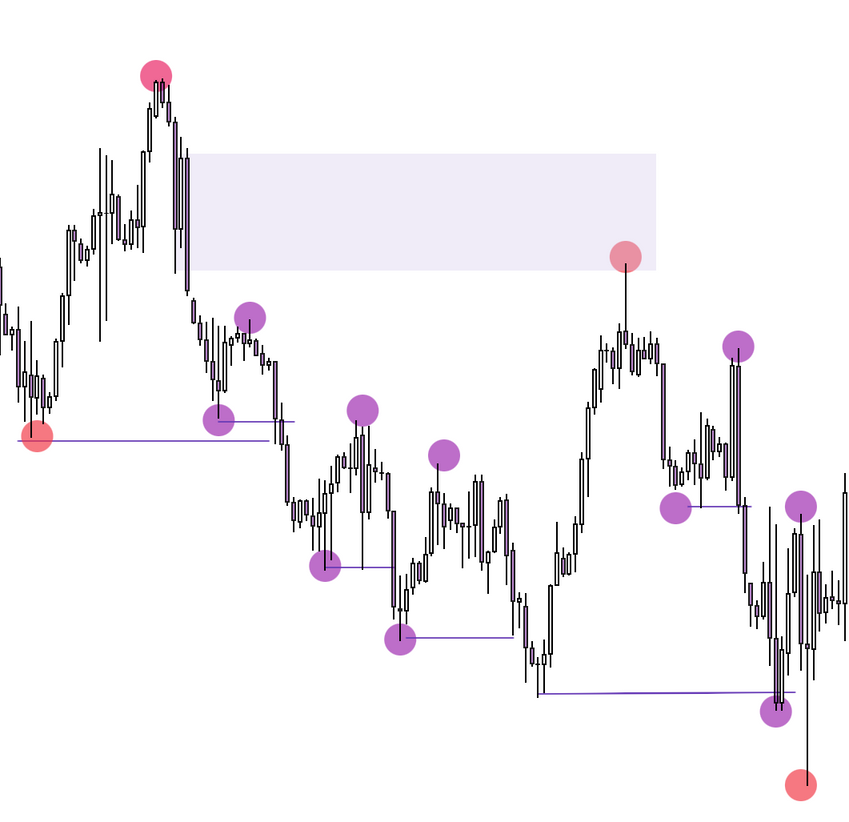

Forexin Turkaslani
آکادمی استراتژی LIT
آکادمی استراتژی LIT
 چت آنلاین
چت آنلاین
ساختار، نقدینگی و تلههای بازار | متد فارکسین ترک اصلانی
سلام دوست من! 👋 این راهنما را قدمبهقدم و به زبان ساده آماده کردهایم تا از «دیدن نمودار» به «خواندن داستان قیمت» برسی.
BOS شکست ساختار = ادامهٔ روند | ChoCh تغییر شخصیت = هشدار بازگشت. روند صعودی یعنی سقفها و کفهای بالاتر؛ تأیید فقط با بدنهٔ کندل.


برای جهتیابی از H1/H4/D1/W1 استفاده کن؛ ساختار داخلی (M15) فقط برای ورود است و نباید جهت تایم بزرگ را عوض کند.
OB آخرین کندل قبل از حرکت مخالف؛ محل انباشت سفارش نهادی؛ حساسترین بخش = بدنه و ۵۰٪ آن. FVG شکاف بین دو سایه (ناکارایی) که قیمت دیر یا زود پرش میکند. IFC کندلی که آن FVG را شروع میکند. POI منطقهٔ واکنش در تایم بزرگ (H1+).


قوانین: BOS سقف/کف همجهت را میشکند | ChoCh کف/سقف خلاف جهت را | نقطهٔ شکستهشده بین دو impulso است.
Inducement سطوحی با نقدینگی retail که فقط برای وسوسه و جارو شدن استاپ توست. SMT نقطهای که نباید معامله کنی چون سلسلهمراتب آن را جارو میکند.

سلسلهمراتب: W1 ⟵ D1 H4 ⟵ H1 M15 ⟵ M1. سطوح: Major: W1/D1/H4 | Medium: M15/M30 (رنج آسیا) | Minor: M5/M1.
هر سقف/کفی که به POI نمیرسد و قیمت رد میشود، نقدینگی میسازد و POI را قوی میکند. ترندلاینها هم همینطور. POI باید در Discount (خرید، زیر ۵۰٪) یا Premium (فروش، بالای ۵۰٪) باشد.


تریدر retail با الگوهای آشکار وارد میشود و استاپش مشخص است؛ ما خلاف جهت او و داخل Killzone معامله میکنیم؛ TP روی نقدینگی retail با R:R ≥ ۱:۴.


Breakout Push حرکت نهادی برای شکستن به سمت نقدینگی؛ بعد از جارو، نقطهٔ ورود و TP ماست.
